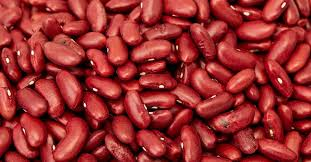
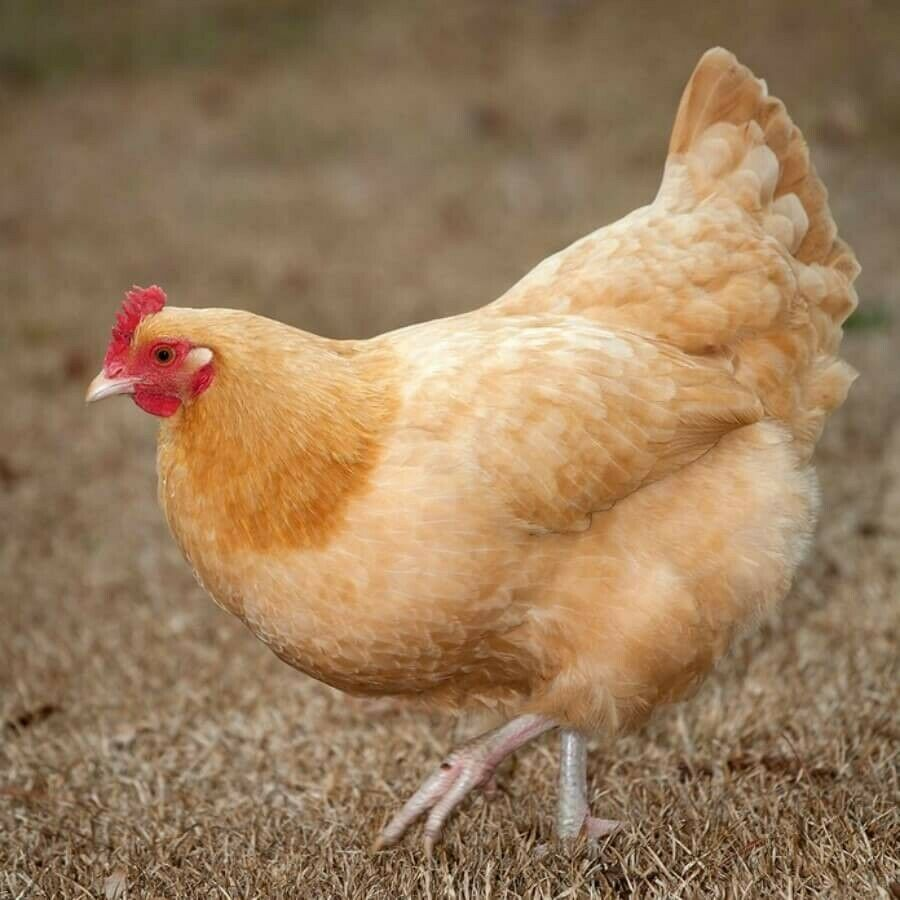
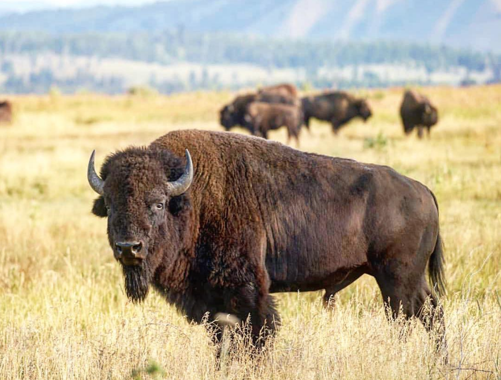
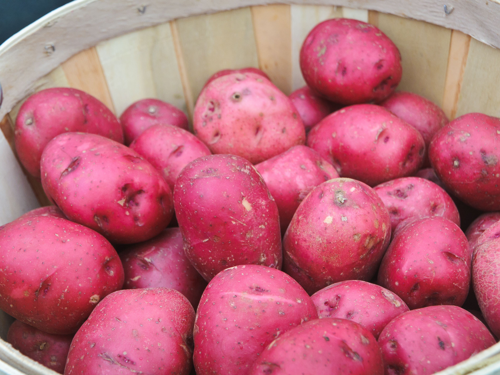
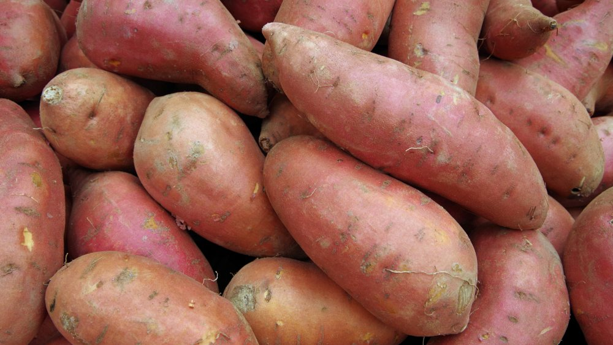

Welcome to the Rogers Best Burgers |
| Rogers Best Burgers believes in farm to table products. We believe in giving people the experience of how things use to be. It is an experience like no others. Where you get highly styled photos of products from our competitors, we believe in giving you raw ingredients the honest truth. No filters. No BS. Just an experience that your great great great grandfather had to deal with as a pioneer. |
Fresh Squeezed Milk
|
Growing up on the farm, we had to milk the cows at the break of dawn. We have a local cow Betsy and her friends. They are milked daily. You can even meet Betsy and Gals. They eat alfalfa grass hay and barley grains. Add to Cart |
Rushing River Water |
Uncle Jed would cross this rushing river daily in a boat until the bridge was put in by the ranch. It would take him an hour and a half communite. Now Uncle Jed spends the time on the boat to get our Rushing River Water. He finds that the freshes, puriest water is in the middle of the river. He is now spending that hour communte to find you the best river water. Add to Cart |
Sparkling Water |
We had a foreign exchange student last year. He did not have to live on a farm. We decided that we could add a moden convience of Sparkling Water. It has a bitter taste and it will grow on you over time. Add to Cart |
Plant Based |
Now days. Plant based burgers are the in thing so overcourse we will have it on the menu. We have the raw essence of the plant based burger. You can help harvest your own food. Add to Cart |
Free Ranged Chicken |
We have fresh free ranged chickens available for our chicken burgers. We are able to sear your burger when cooking so you can have the juiciest burger know to mankind. You will curse your parents for not giving you this experience sooner. By the way, we can fry an egg from our chickens and place the fried egg on any of our burgers. Add to Cart |
Free Ranged Buffalo |
Have you ever wanted to hunt your own food? You should go to a guide hunt in Arizona or Utah. We will not give you this experience here. We do have a buffalo farm where we cull the buffaloes for consumption. It is your lucky day. We have a raw chunk of meat ready to fry for you. Add to Cart |
Russet Spud Fries
|
The tradiontional russet spud fries brings me back to when I was a child. We would eat in a sit down restaraunte. The would have a waitress ask you what you where eating. I always wanted steak fries. The ones that made you feel like you were eating a baked potato. It was a meal in and of itself. Add to Cart |
Red Spud Fries |
Red spuds seem to be a little bit of a stretch. Red potatoes are great in potato salad. We have it on our menu because cousin Sally went to New York City. She had it there and so we have it here. Add to Cart |
Yam Fries |
Yam Fries will really surprise you. Your senses will be confused. The first time that I tried these wonderful delights. I thought to myself is it Thanksgiving and where is the marshmellows? You maybe hooked after this first time trying it. It really is a guilty pleasure. Add to Cart |